This project is an extension of the rendering that is done in the project3-1 path tracer. For this project, I chose to do task 1 and task4 which are “Mirror and Glass Materials” and “Depth of Field”. In task 1, I implemented the reflection and refraction of light which helps enhance the look of the image when materials are mirrors or glass. This gives a shiny effect to the object that is rendered within the scene. I implemented the physics of refraction using snell’s law and used the Fresnel equations via Schlick's approximation. In task 4, I implemented the depth of field effect which can be seen with physical cameras. I rewrote the generate ray function which takes into account the lens radius and the focal distance which helps adjust the depth of field within the scene.
The most problem I encountered was with task 1, specifically with implementing the refraction. When I rendered scenes such as CBspheres.dae, I was not able to see the correct lighting on the glass object. This was mainly due to the rounding between int and float, which caused any light on the object to be incorrect. Once I made sure I was using double and floats instead, I was able to the scene to work properly.
In this part of the project, I wrote the code to handle reflection and refraction which enabled the BSDF sampling to better represent materials that are mirror and glass. For the reflection, I wrote the reflect function which outputs the ray after getting reflected. The sample_f function for the mirror then calls the reflect function to get the wi ray and outputs the light. For the refraction, I apply the snells law to compute the wi which is used in the sample_f function for the refraction BSDF. Finally, to combine both reflection and refraction in the image, I coded the sample_f function for GlassBSDF. I implemented the Fresnel equation model to represent physics and simplified it through Schlick’s approximation.
| 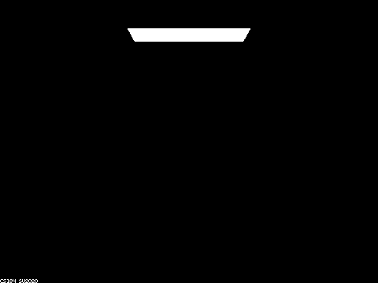 | 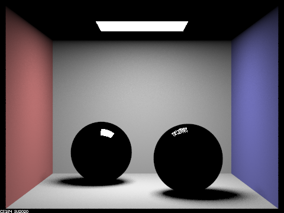 |
| 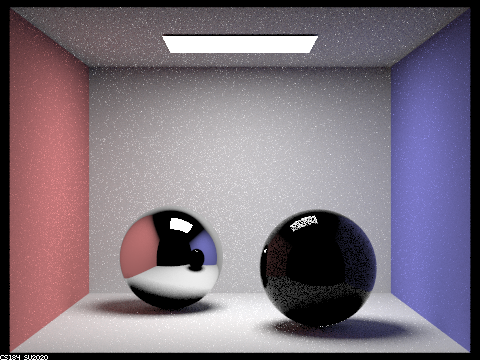 | 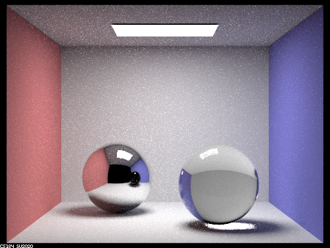 |
| 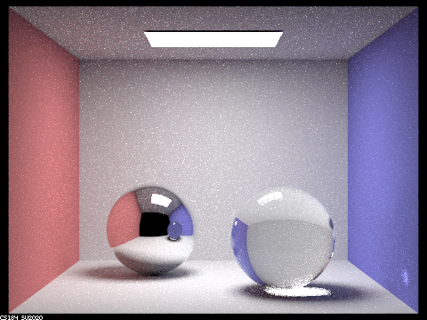 | 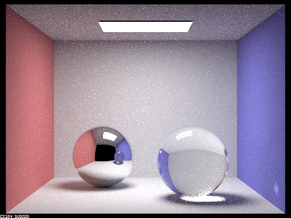 |
| 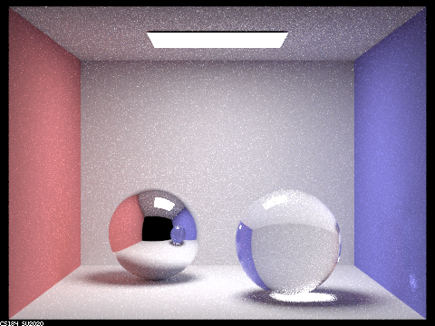 |
The multibounce effects that appear seem to be noticeable with max depth of more than 4. If we look into the left sphere we can see the reflection of the right sphere inside. This is generated through the light bouncing of the walls to the right sphere and to the left sphere then to the camera. The multibounce that occur between the two spheres creates a mirror effect on the spheres which can be scene on the left sphere.
When we compare the images from various max_depth_length we can see the effect of the number of bounces. At depth 0, we see that only the source of lighting is visible in the image. With 1 bounce, the back walls and the object is lit up as well as the outline of the spheres. With two bounces, we can see part of the spheres lit up. After 3 bounces, we can see that both the spheres are lit up and create a glass-like effect. We need 3 bounces for the light for the bounce of the floor/walls to light up the whole glass spheres. After 3 bounces, we just get slightly more illumination in areas that are shadows (not as noticeable).
In this section, I wrote the generate_ray_for_thin_lens function which replaces the generate_ray function from the previous project. In this function, I followed the same conversion from image space to camera space. Then, I had to sample intersection points on the lens and determine the focus point by intersecting the ray and plane of focus. Next, I generate the ray from the sampled point to the focus point and normalize it.
A pinhole camera model is a model where we have a small opening where light can pass through and the image gets inverted. The thin lens model is a material that directs lights in a different direction forming a focal point on the focus pane. A pinhole camera model has no blur and everything is in focus. With the thin lens model, we get a depth of field where a blur is applied to the background focusing on the subject. This can be adjusted through the lens radius and focal distance.
| 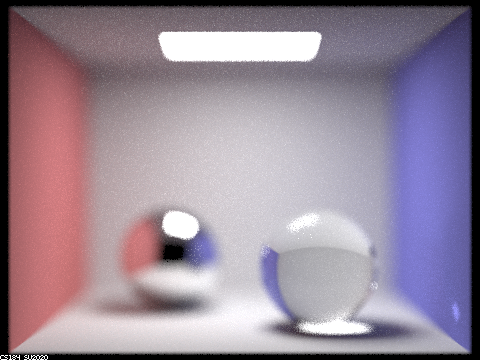 | 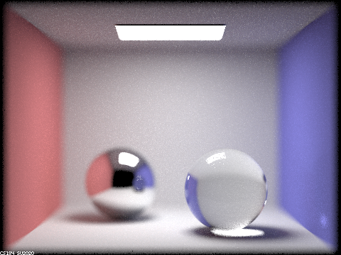 |
| 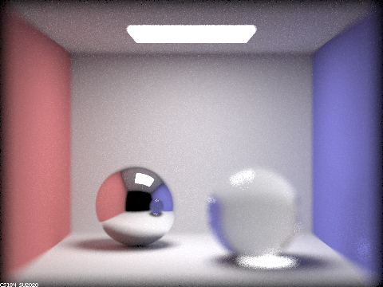 | 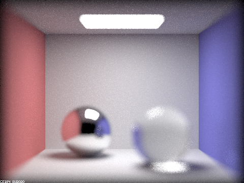 |
In these images, we take a look at four different focus stacks within the scene. I move from focusing near the camera to far away from the camera. In the first image, we see that both background and the two spheres are out of focus since we focus near the camera. Next, I move to focus on the sphere on the right. Next, I move to focus on the left sphere. Finally, I move to focus on the background (the back walls are very sharp).
| 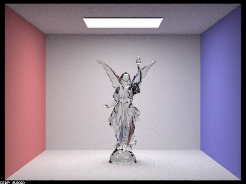 | |
| 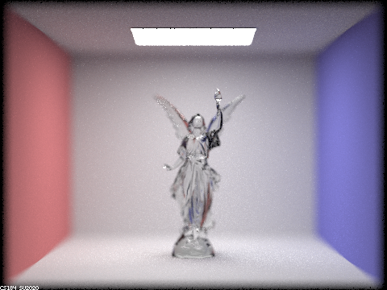 | 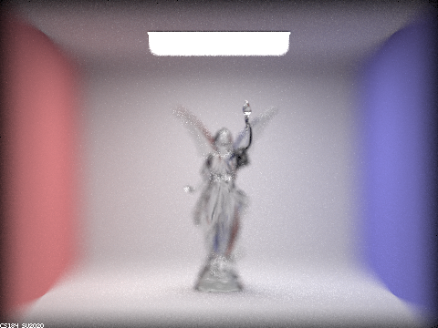 |
In these images, I move the focus on the left arm of the model and change the lens radius which affects the aperture. I start from a small radius of 0.05 to 0.45 radius. We can see from the images that there is more and more blur in the image. The first image has a very slight blur. Next, we get a noticeable background blur around lucy. Next, the lower body is blurred while the upper body stays in focus. Finally, we get just the arm in focus while all the image is out of focus.